1多选难度 ⭐⭐⭐约 6 分钟
用 $R_g=20\ \Omega$、$I_g=5\ \text{mA}$ 的毫安表做简易欧姆表，短接调满偏；接 $400\ \Omega$ 电阻时指针指 $3\ \text{mA}$ 处。正确的是（ ）
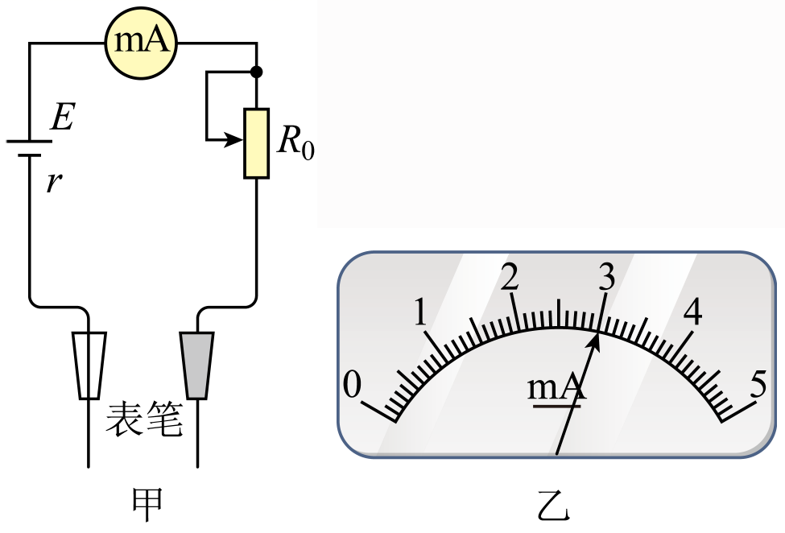
A. 电源电动势 $1.5\ \text{V}$B. 电源电动势 $3.0\ \text{V}$
C. 刻度 $2.5\ \text{mA}$ 处标 $600\ \Omega$D. 刻度 $4\ \text{mA}$ 处标 $200\ \Omega$
💡 显示答案与解析
【答案】BC 【难度】0.65
满偏：$E=I_g(R_g+r+R)$；接 $400\ \Omega$ 时 $E=\frac35I_g(R_g+r+R+400)$。联立 $r+R=580\ \Omega$、$E=3\ \text{V}$，A 错 B 对。
$2.5\ \text{mA}$（半偏）：$R_2=\dfrac{E}{\frac12I_g}-(R_g+r+R)=600\ \Omega$，C 对；$4\ \text{mA}$：$\dfrac{E}{\frac45I_g}-620=150\ \Omega$，D 错。
2填空难度 ⭐⭐约 7 分钟
用多用电表欧姆挡“×100”估测电压表内阻，指针如图虚线。(1) 应换 ______ 挡（×10/×1k），红黑表笔短接进行 ______ 后再测；(2) 正确测量后指针如实线，该挡位内阻为 ______ $\Omega$；(3) 图丙测电压表内阻电路中 a 是 ______ 表笔（红/黑）。
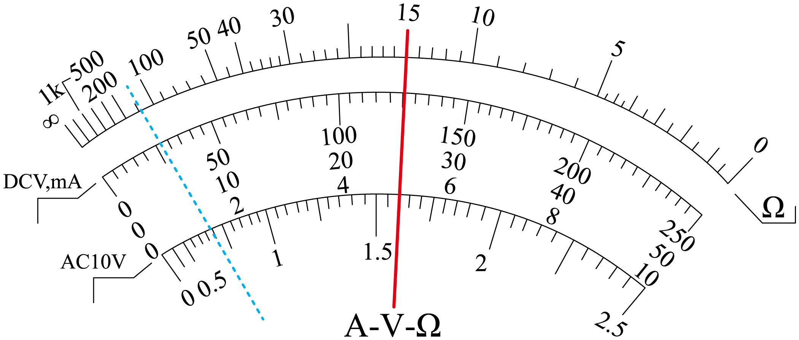
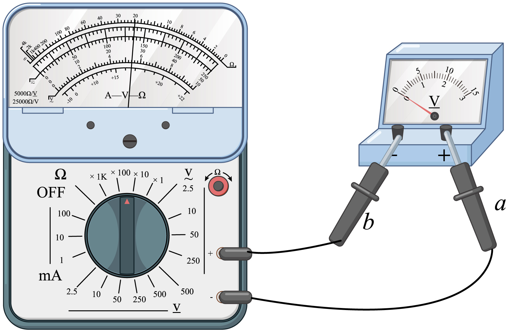
💡 显示答案与解析
【答案】×1k；欧姆调零；$15\text{k}$（或 $15000$）；黑 【难度】0.85
(1) 偏角过小→电阻偏大→换大倍率 ×1k，并欧姆调零。
(2) 中央刻度值×倍率 = 挡位内阻 = $15\ \text{k}\Omega$。
(3) 电流从黑表笔流出、经电压表正接线柱流入，故 a 为黑表笔。
3填空难度 ⭐⭐约 8 分钟
用多用电表测果汁电池电动势 $E$ 与内阻 $r$。① 测内阻步骤正确顺序 ______（A 置×10 B 置OFF C 表笔插电池两极内侧读阻值后断开 D 两表笔接触调零）；② 图甲指针示数约 ______ $\Omega$；③ 直流电压 1V 挡测外电压示数 ______ V；④ 电动势 $E=$ ______（用 $U_$外,U_内$ $表示）。
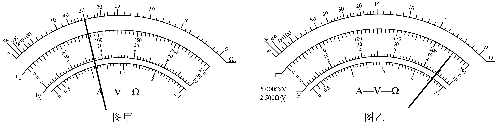
💡 显示答案与解析
【答案】ADCB；$300$；$0.90$；$U_$外+U_内$$ 【难度】0.85
① 先选挡→欧姆调零→测→置OFF，顺序 ADCB。② $30\times10=300\ \Omega$。③ 1V 挡分度 0.1V，读 $0.90\ \text{V}$。④ $E=U_$外+U_内$$。
4填空难度 ⭐约 6 分钟
练习使用多用电表。(1) 测干电池电压，正确操作是 ______（A 欧姆调零选挡红接正 B 机械调零选挡红接正 C 选挡机械调零黑接正 D 选挡欧姆调零黑接正）；(2) 测生活插座电压，选择开关打到 ______（A~Q）位置；(3) 正确操作后指针如图丙，插座电压 ______ V。
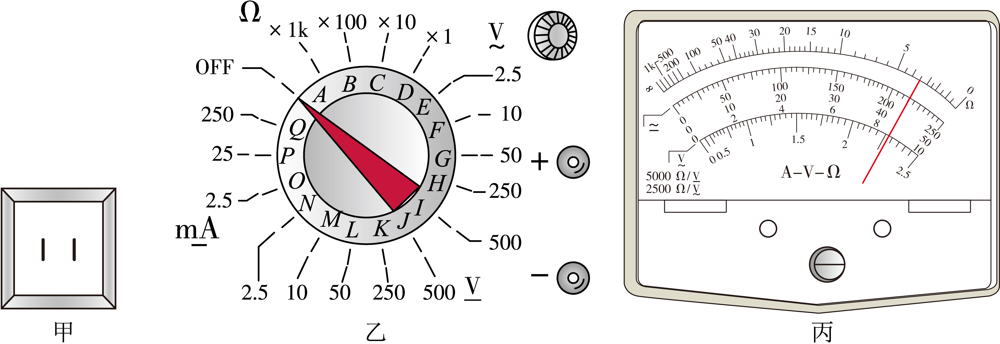
💡 显示答案与解析
【答案】B；H；$215$ 【难度】0.94
(1) 测电压先机械调零、选适当挡、红表笔接正极，选 B。(2) 插座 $220\ \text{V}$ 交流→选 $0\sim250\ \text{V}$ 挡即 H。(3) 读 $215\ \text{V}$。
5填空难度 ⭐⭐⭐约 10 分钟
电磁式多用电表。(1) 选“10mA”挡读数为 ______ mA；选“×10Ω”挡指针在 5 与 10 正中，被测电阻 ______ 75Ω（大于/等于/小于）；(2) 欧姆挡图甲中 a 为 ______（红/黑）表笔；图乙函数 $I=$ ______（用 $R_1,I_g,R_x$）；(3) 用电压挡检测两灯不亮电路（表见下），故障为 ______（A 灯B短路 B 灯A断路 C d-e段断路 D c-d段断路）。
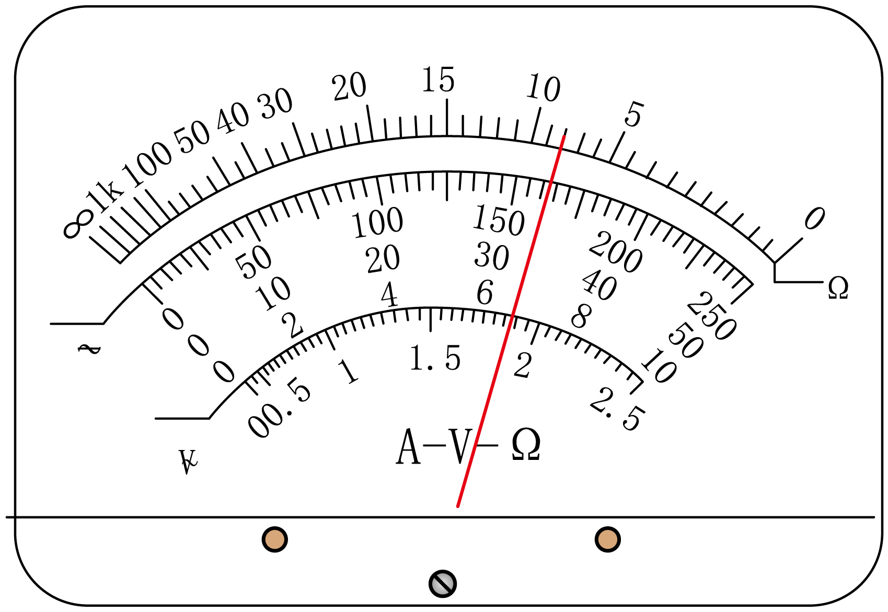
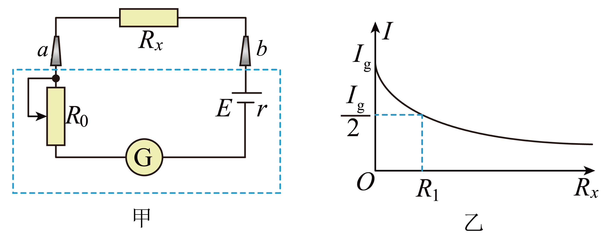
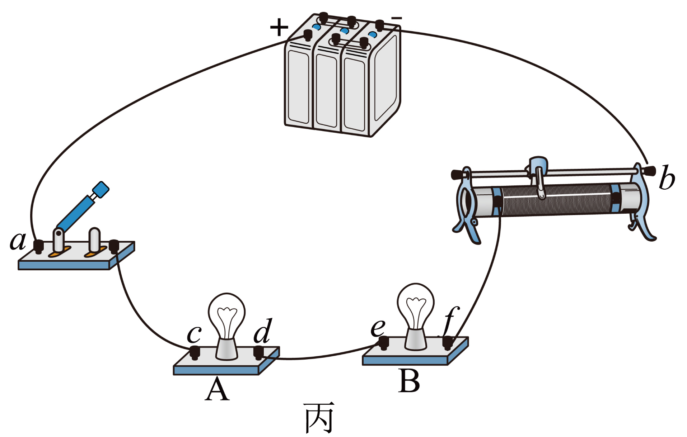
💡 显示答案与解析
【答案】(1) $6.4$；小于 (2) 红表笔；$\dfrac{I_gR_1}{R_1+R_x}$ (3) C 【难度】0.65
(1) 10mA 挡读 $6.4\ \text{mA}$；×10 挡指针在 5、10 中间，对应阻值为调和平均的一半偏左，故小于 $75\ \Omega$。
(2) 欧姆挡电流从黑出、红入，a 接电源正极为红表笔；$R_0=R_1$ 时 $I=\dfrac{I_gR_1}{R_1+R_x}$。
(3) a-b、c-b 有电压、d-e 有电压、c-d 无 → d-e 段断路，选 C。
6填空难度 ⭐⭐⭐约 9 分钟
测多用电表内电池电动势，调至×1Ω挡调零。(1) 图1中 a 表笔为 ______（红/黑）；(2) 适当调节后多用电表、电流表、电阻箱示数如图2，多用电表读数 ______ Ω，电流表 ______ mA，电阻箱 ______ Ω；(3) 两表笔短接时流过多用电表电流 ______ mA；(4) 内电池电动势 ______ V。
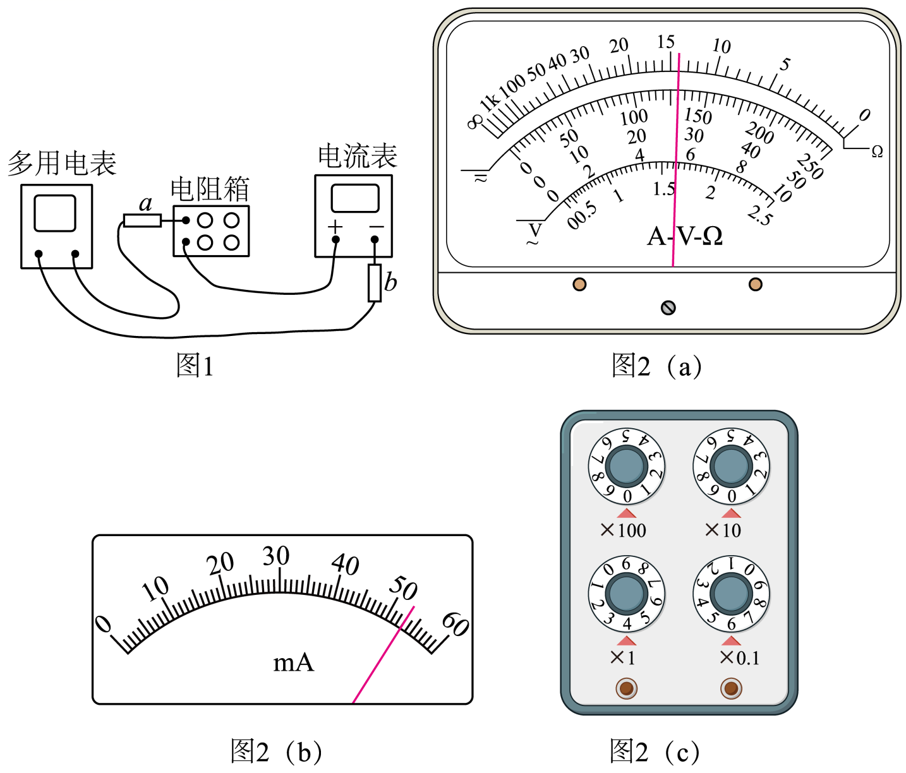
💡 显示答案与解析
【答案】黑；$14$；$53.0$；$4.6$；$102$；$1.54$ 【难度】0.65
(1) 电流从 a 流出（接电源正极）→ 黑表笔。
(2) ×1 挡读 $14\ \Omega$；60mA 挡读 $53.0\ \text{mA}$；电阻箱 $4.6\ \Omega$。
(3) 中值电阻×1 挡读 $15\ \Omega$，$I_g=\dfrac{E}{R_g}=\dfrac{1.54}{15}\approx0.1026\ \text{A}=102\ \text{mA}$。
(4) $E=I(R_{内}+R_{外})=0.053\times(15+14)=1.54\ \text{V}$。
7填空难度 ⭐⭐⭐约 9 分钟
多用电表测 $3\ \text{V}$ 量程电压表内阻，调“电阻×1k”挡。(1) 电压表电阻为 ______ $\text{k}\Omega$（两位有效数字）；(2) 据信息估算多用电表内阻 ______ $\text{k}\Omega$（三位有效数字）；(3) 测二极管反向电阻步骤补全：C. ______；D. ______ 表笔接正极、______ 表笔接负极；F. 完毕置 ______ 位置。
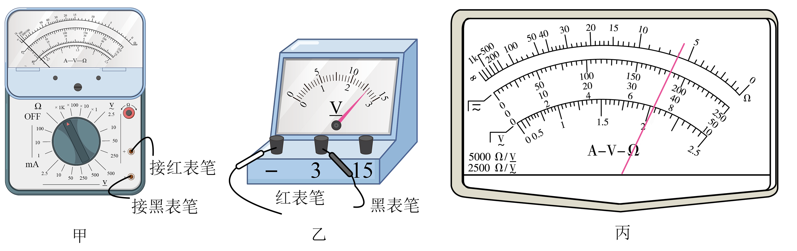
💡 显示答案与解析
【答案】(1) $6.0$ (2) $14.8$ (3) 红黑短接欧姆调零；红；黑；OFF 【难度】0.65
(1) ×1k 挡示数 $6.0\times1\text{k}\Omega=6.0\ \text{k}\Omega$。
(2) 由 $U=\dfrac{E}{R_{内}+R_V}R_V$：$2.6=\dfrac{9}{R_{内}+6}R_V\Rightarrow R_{内}\approx14.8\ \text{k}\Omega$。
(3) 欧姆调零后红表笔接二极管正极、黑接负极；完毕置 OFF。
8填空难度 ⭐⭐⭐约 8 分钟
欧姆表：$I_g=10\ \text{mA}$、$R_g=100\ \Omega$、$E=1.5\ \text{V}$、$r=1\ \Omega$。(1) 内阻 $R_{内}=$ ______ $\Omega$；(2) 红黑对接调零后接 $R_x$，电流 $3\ \text{mA}$ 刻度对应 $R_x=$ ______ $\Omega$；(3) 要更大倍率需用满偏电流更 ______（大/小）的电流计；(4) 电池老化 $E$ 由 1.5→1.2V、$r$→2Ω 但仍可调零，测量值比真实值 ______（偏大/偏小/不变）。
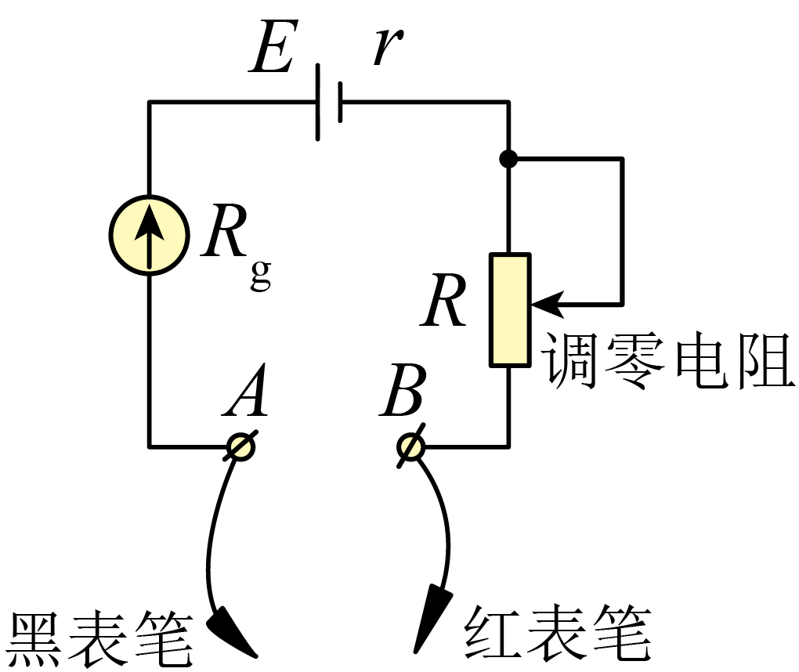
💡 显示答案与解析
【答案】(1) $150$ (2) $350$ (3) 小 (4) 偏大 【难度】0.65
(1) $R_{内}=\dfrac{E}{I_g}=150\ \Omega$。
(2) $R_{内}+R_x=\dfrac{1.5}{3\times10^{-3}}=500\Rightarrow R_x=350\ \Omega$。
(3) 倍率大→$R_{内}$ 大→$I_g$ 小。(4) 调零后 $R_{内}=\dfrac{E'}{I_g}$ 减小→电流偏小→读数偏大。
9填空难度 ⭐⭐⭐约 8 分钟
多用电表刻度盘，×100 挡测电阻指针图示。(1) 电阻 ______ $\Omega$；测约 $2.0\times10^4\ \Omega$ 应选 ______ 挡；(2) 50mA 挡读 ______ mA；250mA 挡读 ______ mA；(3) 10V 挡读 ______ V。
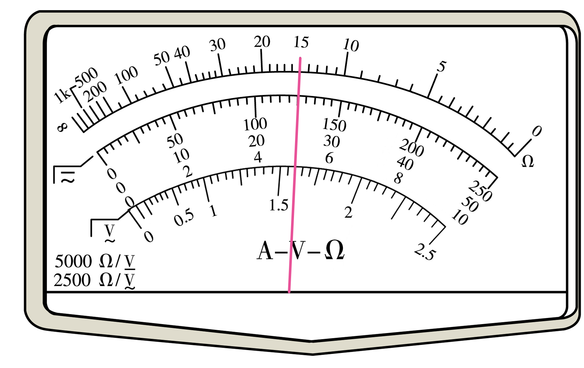
💡 显示答案与解析
【答案】(1) $1.5\times10^3$；×1k (2) $25.0$；$125$ (3) $5.0$ 【难度】0.71
(1) 最上排刻度 15×100=$1500\ \Omega$；测 $2.0\times10^4$ 选 ×1k。
(2) 50mA 挡分度 1mA→$25.0\ \text{mA}$；250mA 挡分度 5mA→$125\ \text{mA}$。
(3) 10V 挡分度 0.2V→$5.0\ \text{V}$。
10填空难度 ⭐⭐⭐约 9 分钟
小萌练习用多用电表。(1) 直流 100mA 挡指针（图甲 I）读数 ______ mA；(2) 欧姆挡说法正确 ______（A 偏转角过大换更大倍率 B 红表笔电势低于黑表笔 C 改倍率后须重新机械调零）；(3) ×100 挡测 $8000\ \Omega$ 电阻指针（图甲 II），表盘正中刻度数字为 ______；(4) ×1 挡测电容，指针 ______（A 右偏较大后偏角渐小 B 右偏一定角度后稳定）。
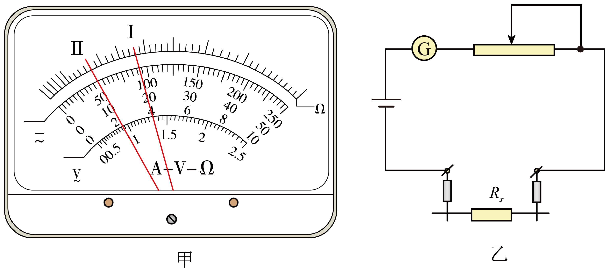
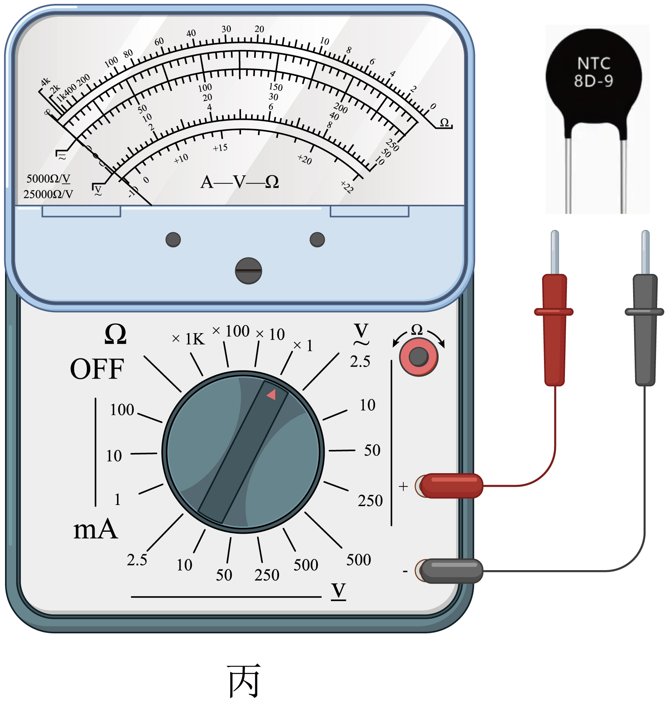
💡 显示答案与解析
【答案】(1) $37$ (2) B (3) $20$ (4) A 【难度】0.56
(1) 100mA 挡中间均匀刻度读 $37\ \text{mA}$。
(2) 欧姆挡红表笔电势低于黑表笔（内部电源正接黑），B 对；偏转角过大应换更小倍率；改倍率后重新欧姆调零而非机械调零。
(3) 指针指满偏 1/5：$R_{内}=\frac14R_x=2000\ \Omega$，中值电阻 $2000\ \Omega$，×100 挡正中刻度标 $20$。
(4) 测电容充电：刚接触短路电流最大右偏最大，随后电流减小左偏，充满停于 ∞，选 A。